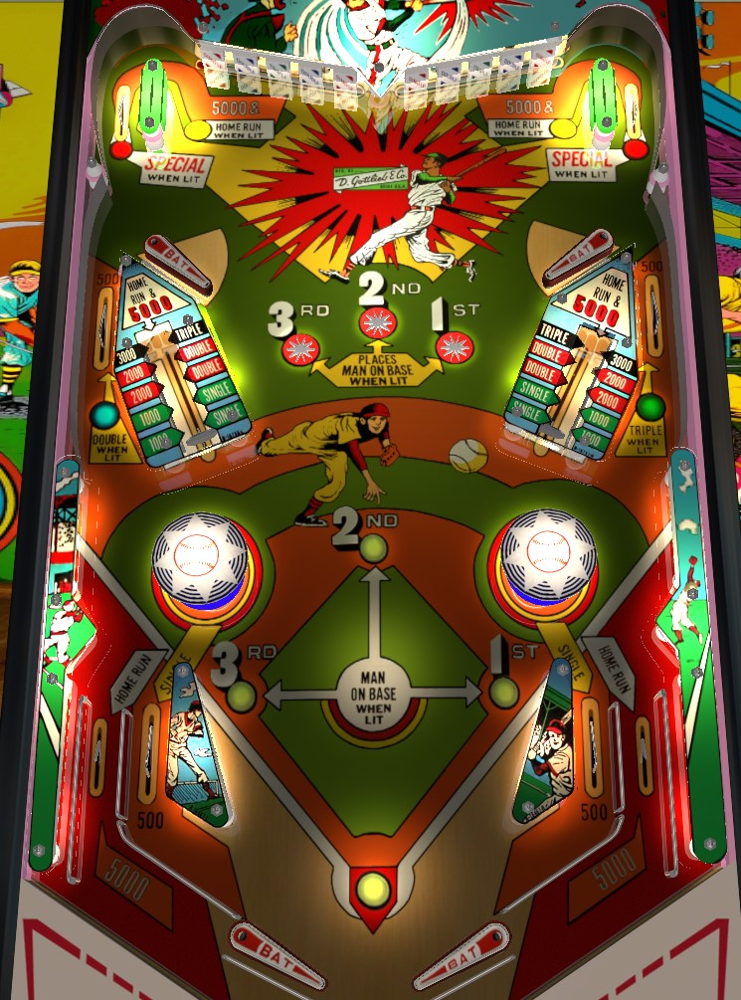

Complete banks of upper drop targets to light the upper side loops for specials in addition to the 5,000 points and home run. Individual drop targets give singles, doubles, or triples on the baseball field. The vary-targets are best avoided, as both a missed shot and the return feed can hit a bumper and send the ball way out of control.
Big Hit does not have anything resembling a conventional plunger or shooter lane. Instead, when the right flipper button is pressed, the pinball is launched upwards out of the drain, between the flippers, and onto the playfield. If the drain kicker is at full power, the ball will be launched all the way to the top of the table and go around the upper right loop, scoring 5,000 points and a home run for free, but if the kicker is not at full power, it may only feed the ball to the upper right flipper or bloop the ball onto the middle playfield.
The lights in the center of the playfield represent baserunners on a baseball field. If there is not a runner on 1st, 2nd, or 3rd base, represented by lit bases on the playfield, the corresponding star rollover in the upper middle of the table will be lit, where it will score 100 points and put a runner on the respective base. Anything that scores a single, double or triple will move all baserunners 1, 2, or 3 positions, then add a baserunner to 1st, 2nd, or 3rd base, respectively. Any time a runner advances past 3rd base, a Run is scored. A Home Run scores one Run for each lit baserunner, plus one.No pinball points are innately given for advancing a baserunner or scoring Runs. Reaching certain thresholds for Runs scored can award additional replays, but in a competition setting, it's usually only the conventional pinball points that count.
Each drop target down scores 500 points. From left to right in each bank, the drop targets score a single, a double, a triple, a double, and a single. All drop targets down lights the upper side loop on the same side of the table for a special in addition to its usual value of 5,000 points and a home run. Drop targets do not reset once cleared; they only reset at the end of a ball in play.
Just behind the upper flippers on each side is a middle side lane. Both score 500 points. The left side lane scores a double, and the right side lane scores a triple.
The vary-targets can be pushed in to any of 6 different levels. Level 1 or 2 scores 1,000 points and a single; level 3 or 4 scores 2,000 points and a double; level 5 scores 3,000 points and a triple; level 6 scores 5,000 points and a home run. The positions of the bumpers mean there is very little margin for error on a vary-target shot. If you cannot reliably hit the vary-target, or if the return feed from the vary-target causes the ball to hit a bumper, it's best to avoid the risk of an out of control ball and not shoot for the vary-targets at all.
Big Hit has a conventional in/out lane setup. Out lanes score 5,000 points and a home run. In lanes score 500 points and a single.
There is no end of ball bonus, and there is no way to earn an extra ball.